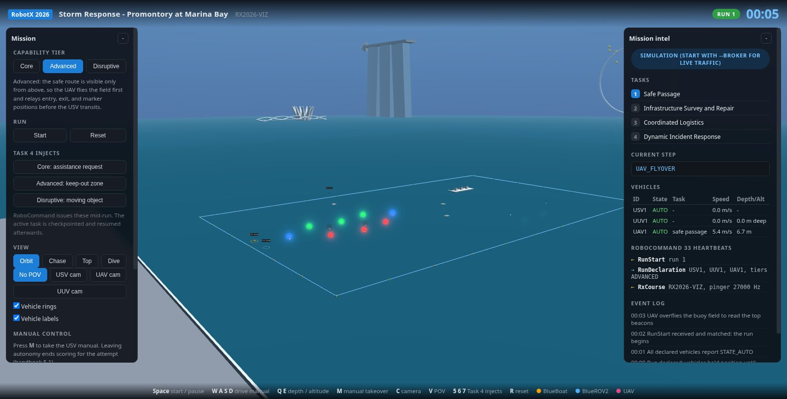
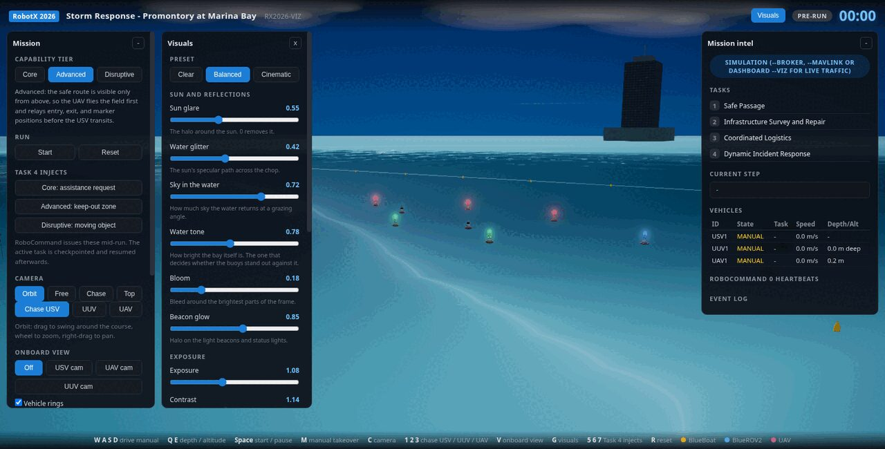

Simulation
The course is in Singapore, the hardware is shared between four builds and the season is short. So the mission is flown in software first: the real firmware behind an emulated radio, and a model of the Marina Bay course built from the handbook's own dimensions.
Fly the course
This is the same scene the team rehearses with, running in your browser. It starts paused. Press start, then use the camera buttons to follow a vehicle, or trigger one of the Task 4 interruptions and watch the mission recover.

Four layers
Each layer answers a different question, and each is cheap enough to run on the machine in front of whoever is working.
| Layer | Answers | Cost to run |
|---|---|---|
| Python vehicle models | Does the mission logic hold together? Deterministic, instant, used by the test suite. | seconds |
| ArduPilot software in the loop | Does the real firmware accept what we send it? Prearm checks, filter convergence, mode changes, failsafes. | 2 s to boot the fleet |
| HaLow link emulator | Does it still work over a radio that drops packets and fades? | in line with the above |
| Course model in the browser | Does the plan make sense on the actual course, and can a judge or a teammate see it? | a browser tab |
The real firmware, on a laptop
Software in the loop runs the exact firmware the vehicles run, compiled for the host: ArduRover with a motorboat model for the BlueBoat, ArduSub with a vectored model for the ROV, and Copter with a quad model for the aircraft. That gives us the behaviour that matters and none of the risk: real arming checks, real filter convergence, real guided navigation, real failsafes.
Between the firmware and the ground station sits an emulator for the WiFi HaLow link, because the radio is part of the system. It adds fixed latency and jitter, random loss, a bandwidth cap and periodic outages.
| Profile | Behaviour |
|---|---|
| perfect | No impairment. Used when a test is about something else. |
| halow_near | Short range, low latency, occasional loss. |
| halow_typical | The link we expect on the course. |
| halow_fringe | 60 ms of latency with 40 ms of jitter, 8 percent loss, 300 kbps, and a two second fade every 25 seconds. |
Under the fringe profile the health monitor escalates to an emergency stop on heartbeat loss, which is the correct behaviour and the reason the profile exists. It is also what led to the adapter requesting only the telemetry it consumes instead of ArduPilot's default stream set.
The course model
Everything on the water is built from the handbook's build specifications, in metres: ten buoys with side and top light beacons, the pair of survey buoys with their colour indicators and pingers, a five section pipeline on stands with five magnetic light nodes, three docking bays with their windows and indicators, two 2 m delivery platforms with 65 cm circles in the specified colours, and the launch pad. Marina Bay Sands, the ArtScience lotus, the Flyer and the Helix Bridge are there because they are what the operator will actually be looking at.
A full safe passage attempt at Advanced: the aircraft flies the buoy field first because the route is only visible from above, relays it to the boat, and the boat circles the entry buoy and transits. The panel on the right is the RoboCommand traffic the real link would carry.
The ROV at transit depth with the tether running up to the boat. The water is opaque on purpose: Marina Bay is a working harbour, and a camera above the surface would see nothing.
The same scene has three other modes. It can mirror live RoboCommand traffic off a broker, read MAVLink telemetry straight off a vehicle or a software in the loop fleet, or be served by the running ground station so the terminal console and the browser show one mission.

End to end validation
One command launches the fleet, runs a full scripted mission against it and prints a pass or fail table of 25 checks. It covers the sequence from a cold start to a stop: fleet ready with position, the pre-run gate, the course configuration and run declaration, arming against real prearm checks, run start, takeoff, task dispatch, buoy circling and the passage transit under guided navigation, an assistance request arriving mid transit, the checkpoint, the incident response with its acknowledgement on the wire, resume from the checkpoint, the safe passage report, task and mission completion, return to launch, and an emergency stop that disarms everything.
The exit code gates continuous integration, so a change that breaks the mission breaks the build.
The browser scene is checked the same way. A headless harness builds the whole world without a screen, flies the mission, and fails if a task does not complete, if the expected RoboCommand messages do not appear in order, if a chase camera loses its vehicle, or if the underwater chase camera comes above the surface.
What is real and what is not
Real
The autopilot firmware, its arming and failsafe logic, the MQTT broker, the protocol buffer schema from the competition release, the message rates, and the ground station itself. The same program drives the simulated fleet and the hardware.
Not real
Hydrodynamics beyond the firmware's own models, waves and current, and anything to do with cameras. Perception cannot be tested here, which is why the detector work runs on recorded footage instead.
What comes next
Two additions are planned. Tasks 2 and 3 get their own validation scenarios, so the pipeline follow and the dock approach are exercised the way the safe passage already is. After that, a Gazebo world with the course props would add simulated cameras and disturbances, which is what perception in the loop needs.
Photorealistic underwater rendering on Isaac Sim was evaluated and set aside: the lab's current graphics card is not supported by the versions that carry the underwater work, and nothing in the mission logic needs it.